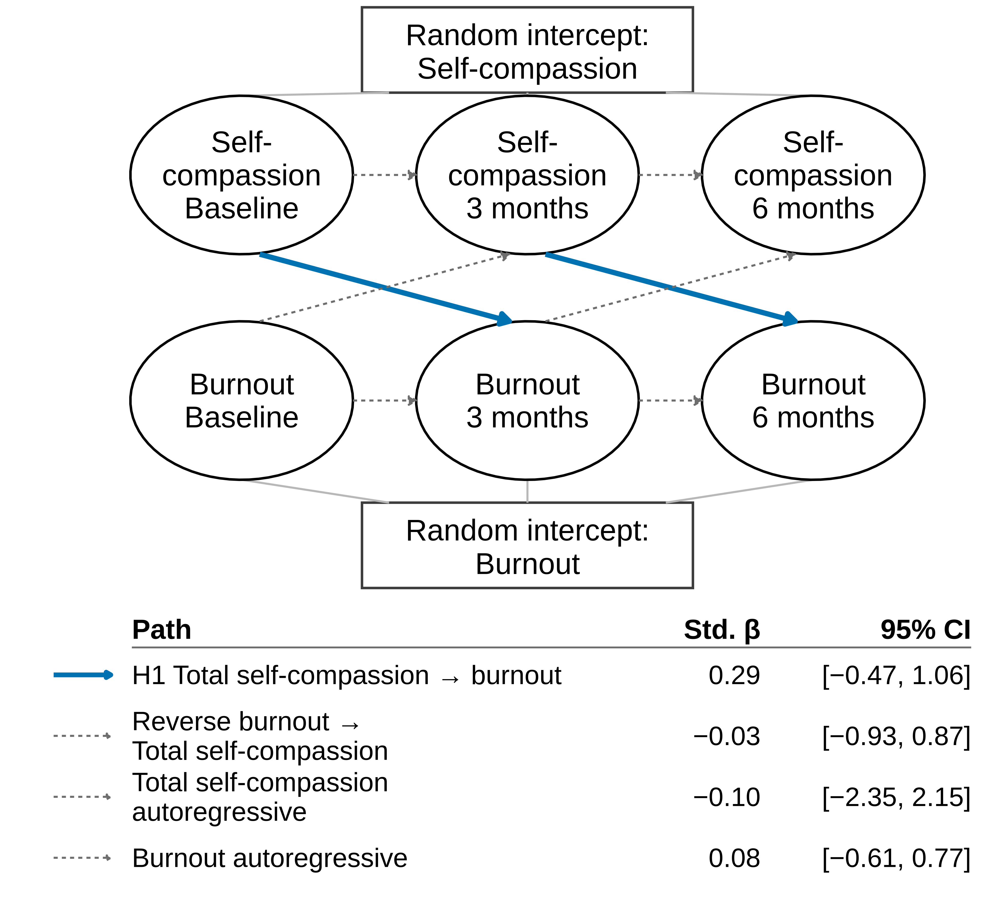
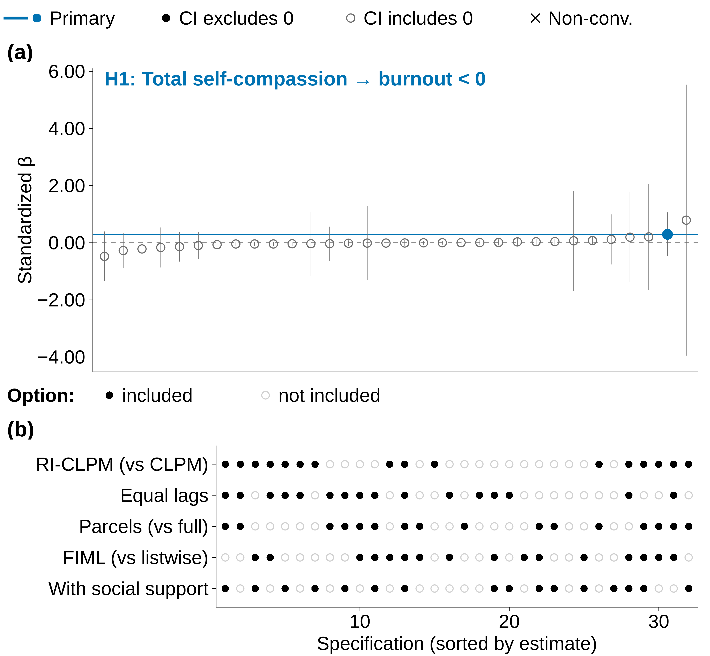

Summary
Self-compassion is consistently associated with lower burnout, mostly in between-person comparisons. In this within-person panel study, I estimate whether, within each coach, higher-than-usual self-compassion precedes lower burnout. I use data from an open panel of Swiss sports coaches (Ackeret et al., 2022a) across three waves at baseline, 3 months, and 6 months (N = 422). After longitudinal invariance tests, I separate between-person differences from within-person change with a random-intercept cross-lagged panel model.
The random-intercept correlation between self-compassion and burnout was r = −.48, 95% CI [−.60, −.37]. For burnout and perceived social support, scalar invariance held; for self-compassion, partial scalar invariance held after one intercept (h1SCPB) was released. I estimated the Hypothesis 1 RI-CLPM with MLR; it converged and fit the data, χ²(121) = 149.41, CFI = .994, RMSEA = .027, 90% CI [.000, .043], SRMR = .044.
Methods
My analytic sample comprises 422 coaches (420 at baseline, 301 at 3 months, 259 at 6 months; 258 at all three waves). The published sample description reports 20.7% women, a mean age of 44.48 years (SD = 11.03), and 57 sport disciplines across competitive and recreational levels (Ackeret et al., 2022a). Self-compassion was measured with the 12-item Self-Compassion Scale Short Form (Raes et al., 2011). Burnout was measured with the 15-item Coach Burnout Questionnaire (Harris, 2005). Perceived social support was measured with the Brief Perceived Social Support Questionnaire.
I fit a three-wave RI-CLPM with latent constructs for self-compassion and burnout, estimated with robust maximum likelihood (MLR) and full-information maximum likelihood for missing data in R with the lavaan package. Autoregressive and cross-lagged paths are constrained equal across the two intervals in the unstandardized metric. Hypothesis 1 predicted a negative within-person path from self-compassion to later burnout. This is a secondary analysis of publicly deposited panel data (Dryad deposit 10.5061/dryad.p5hqbzkrk).
Figures


Links
- PDF: Download preprint PDF
- Preprint: Preprints.org, manuscript 202611.0474.
- DOI: 10.20944/preprints202611.0474.v1 (registration pending)
- Data (original deposit): 10.5061/dryad.p5hqbzkrk
Monnot, M. J. (2026). Does self-compassion precede lower burnout in sports coaches? A within-person panel study. Preprints. Preprint: manuscript 202611.0474.